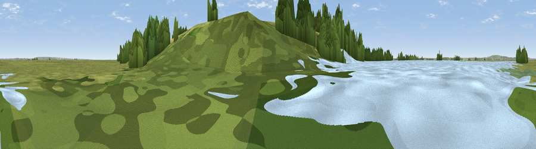

Viewpoint near Cliffe
#39623 in England · top 76% of its area beats it · near CliffeThe view, rendered

A 360° render of this exact spot computed from the terrain model, tree cover and land cover — summer colours, afternoon light, calibrated against photographs of famous viewpoints. Real trees, hedges and buildings will differ in detail.
The panorama
Grey silhouette: terrain skyline in each direction (720 bearings, Earth curvature and refraction included). Dashed green: skyline with trees (+15 m) and buildings (+8 m) as obstacles. Blue strip: how far the ground is visible on each bearing.
Where the view opens
Wedge length = distance to the farthest visible ground on that bearing (vegetation-aware). Rings at 10, 25 and 50 km.
What fills the view
49% grassland · 33% woodland · 12% water · 3% wetland · 2% cropland · 1% built-up
Angular shares of the visible panorama (visual magnitude), not map area. Landscape diversity 0.53 (0–1 Shannon).
Key numbers
More beautiful places nearby
The staircase of upgrades: each row has a higher view potential than everything closer. Driving times are estimates from straight-line distance, calibrated against real road routing — check an actual route before setting out.
| Place | Direction | Drive | Score |
|---|---|---|---|
| Flamingo Viewpoint | WNW · 2 km | ~4 min | 33.2 |
| Northernmost Point of Kent | N · 3 km | ~7 min | 35.2 |
| Viewpoint near Cliffe Woods | SSE · 4 km | ~9 min | 54.0 |
| Broom Hill | S · 7 km | ~14 min | 54.9 |
| Viewpoint near Shorne | SW · 7 km | ~14 min | 55.1 |
| Viewpoint near Vange | N · 11 km | ~20 min | 58.2 |
| Viewpoint near Horndon On The Hill | NNW · 11 km | ~20 min | 58.8 |
| Viewpoint near South Benfleet | NNE · 11 km | ~22 min | 62.9 |
51.46319, 0.48900 · source: osm viewpoint · position refined by local search. Computed location — check access rights before visiting.